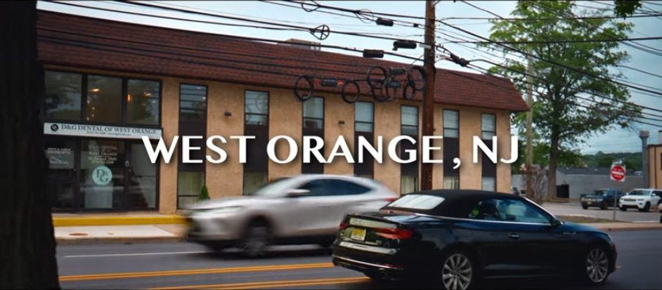
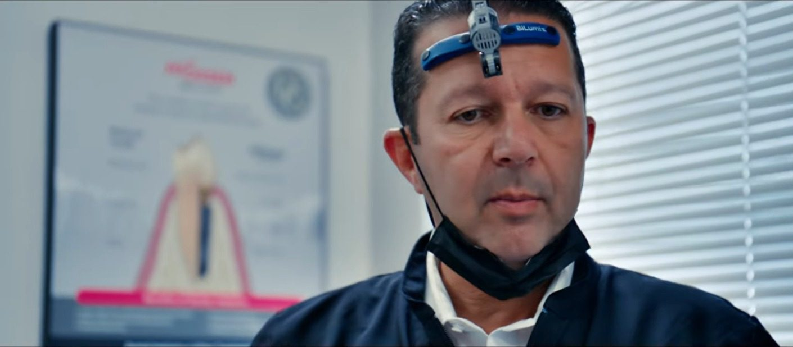
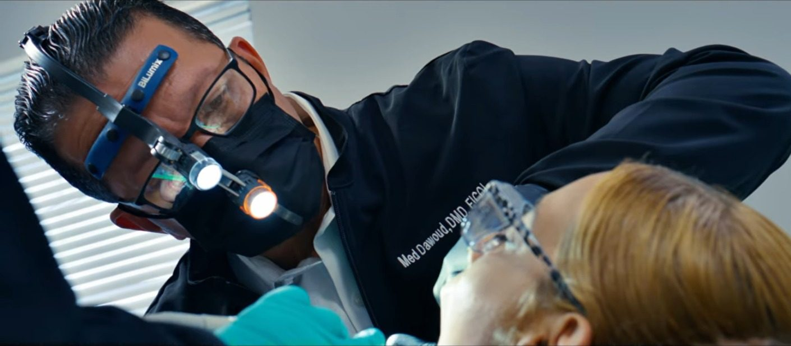
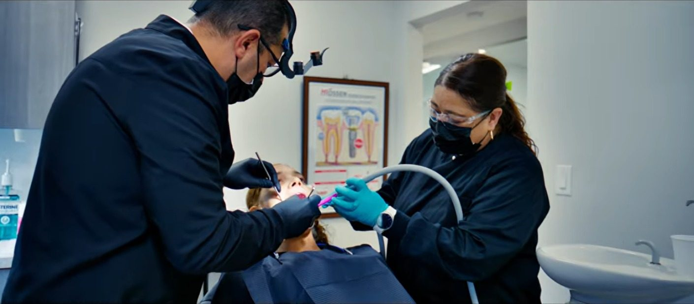
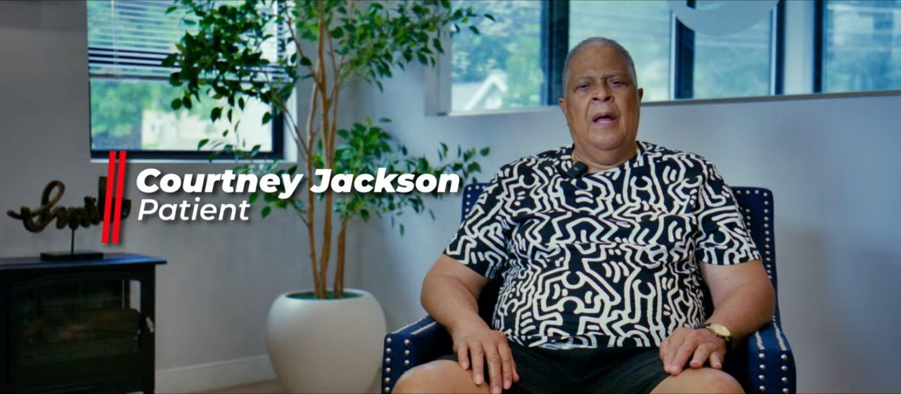
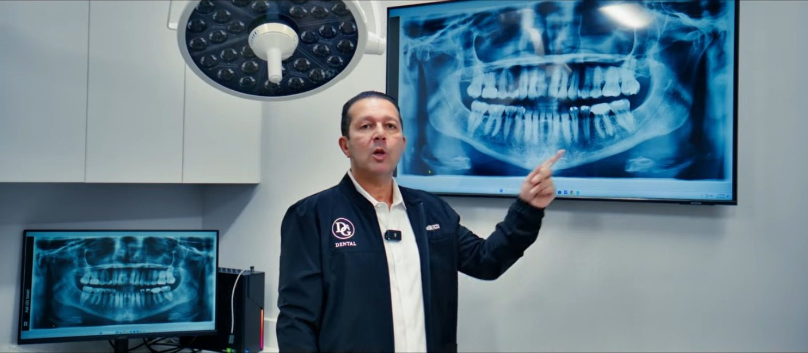
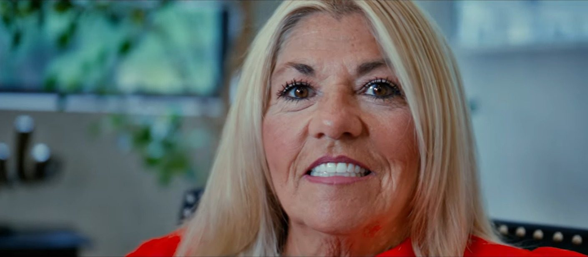
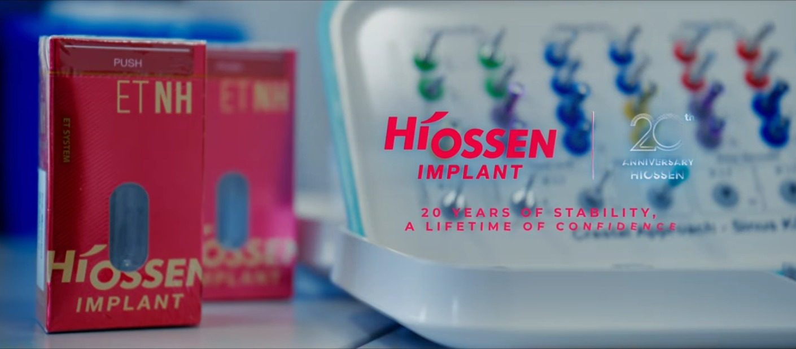

Clinician Interview Series
— 20th Anniversary Campaign & Video Lead
Integrated Video Strategy, On-site Directing & Omnichannel Content Distribution.
An integrated video campaign for Hiossen’s 20th Anniversary, leading the full-lifecycle production of a clinician interview series to drive brand trust and clinician PR.
01. Campaign Strategy & Objectives
Background: Celebrating Hiossen's 20th Anniversary by leveraging long-term, authentic clinician voices.
Core Goal: Build unshakeable B2B brand credibility (VoC/VoE) and provide interviewed clinicians with high-value digital PR assets for their own practice marketing.
Target Audience: Prospective and existing clinicians seeking proven, long-term dental solutions.


02. Creative Direction & On-Site Execution
Narrative & Scripting: Developed storytelling frameworks focusing on clinical reliability, long-term user experience, and brand partnership.
On-Site Production Lead: Directed camera framing, lighting, audio engineering, and clinician interactions on location.
Branded Look: Applied a consistent 20th-anniversary visual identity across every frame.


03. Post-Production & Quality Control
Revision Strategy: Led precise post-production review cycles—refining video pacing, lower-thirds motion graphics, color grading, and clinical terminology.
Brand Compliance: Ensured all final cuts strictly aligned with Hiossen's 20th-anniversary global visual guidelines before release.


04. Omnichannel Distribution & Value Creation
Clinician Empowerment (Win-Win): Delivered customized high-resolution video clips directly to participating clinicians for their clinic websites and social media.
YouTube & Website: Full-length feature interviews for long-term SEO and brand authority.
Social Media (LinkedIn/IG): Short-form reels focusing on key clinical insights and highlights.
Sales Enablement: Provided sales teams with authentic video testimonials for B2B pitch decks.

